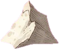


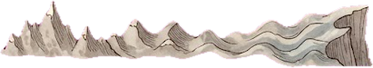

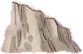


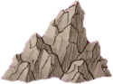

概要: 発注文どおりマゼンタ背景で届いた見本シートから、山の部品を1個ずつ切り出しました(背景は透明)。部品への点数付け(群れ・頂点)は次の工程です。
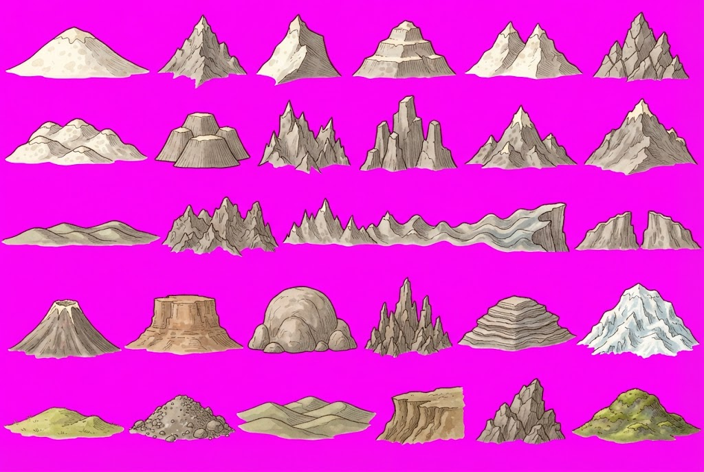




ユーザーが送ってくれた線画シート。線は黒、内側は紙色で塗り、外側は透明にしてあります。色と明暗は後から地形に合わせて塗る前提の「形だけの部品」です。
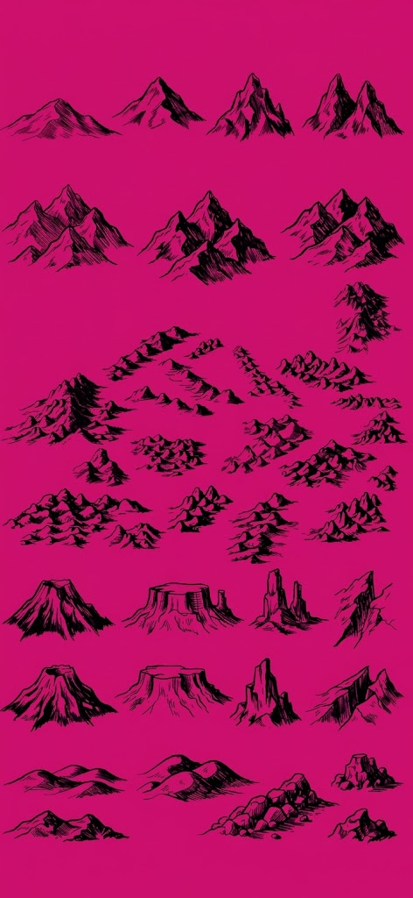


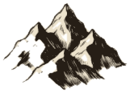
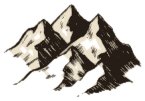


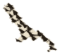
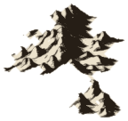


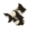
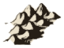
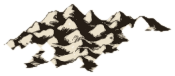

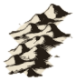


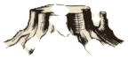


限界: 元画像が小さく(幅472)、部品は約100〜200画素で拡大すると粗い。近い群れは1個に連結(線14は2群、線15は4群が1個)。線は元より太く出た。紙色の塗りは私の仮の色。目視確認のみ。
次: 部品ごとの点数表(地形のどこに多いか)の案をこの上に作る。